EE1021 Programming for Engineers - Lecture 9
Last time
Today: matplotlib.pyplot
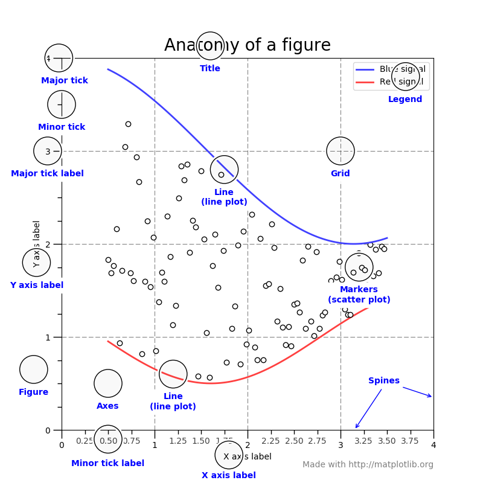
To draw a first plot, we:
x array.y array from x.x versus y.fig, axs = plt.subplots(1, 1)
fig)axs)lns = axs.plot(x, y)
lns is a list of line objects; you can create more than one line object at a time.lns[0].x and y are indeed discrete points (coordinates).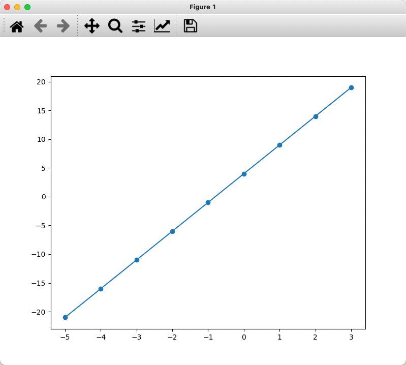
| Symbol | Marker |
|---|---|
"." |
point |
"," |
pixel |
"o" |
circle |
"v" |
triangle_down |
"^" |
triangle_up |
"<" |
triangle_left |
">" |
triangle_right |
"1" |
tri_down |
"2" |
tri_up |
"3" |
tri_left |
"4" |
tri_right |
"8" |
octagon |
| Symbol | Marker |
|---|---|
"s" |
square |
"p" |
pentagon |
"P" |
plus (filled) |
"*" |
star |
"h" |
hexagon1 |
"H" |
hexagon2 |
"+" |
plus |
"x" |
x |
"X" |
x (filled) |
"D" |
diamond |
"d" |
thin_diamond |
"\|" |
vline |
"_" |
hline |
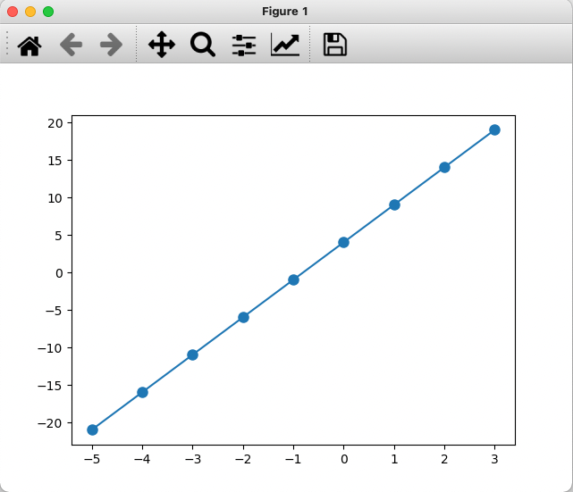
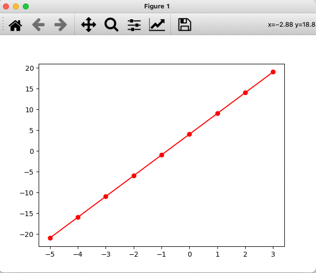
Fast color names:
| Code | Color | Code | Color |
|---|---|---|---|
'b' |
blue | 'm' |
magenta |
'g' |
green | 'y' |
yellow |
'r' |
red | 'k' |
black |
'c' |
cyan | 'w' |
white |
lw)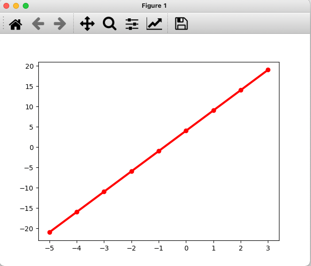
ls)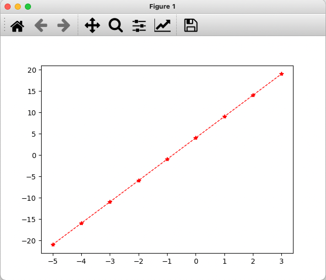
Set with the linestyle (or ls) keyword:
| Value | Style |
|---|---|
'-' |
solid |
'--' |
dashed |
':' |
dotted |
'-.' |
dash-dotted |
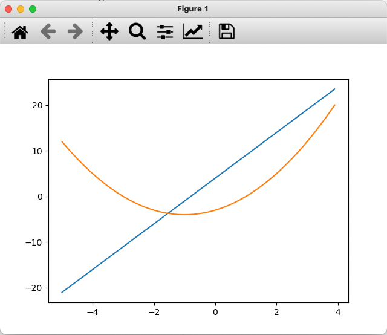
legend is a function of the axes object.import numpy as np
import matplotlib.pyplot as plt
# generate x array
x = np.arange(-5, 4, .1)
# calculate y and d
y = 5*x + 4
d = x**2 + 2*x - 3
# create figure and axes objects
fig, ax = plt.subplots(1, 1)
line1, = ax.plot(x, y)
line2, = ax.plot(x, d)
# create legend
ax.legend([line1, line2], ['y curve', 'd curve'])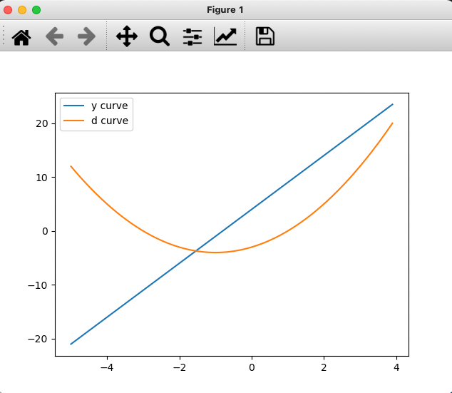
import numpy as np
import matplotlib.pyplot as plt
# generate x array
x = np.arange(-5, 4, .1)
# calculate y and d
y = 5*x + 4
d = x**2 + 2*x - 3
# create figure and axes objects
fig, ax = plt.subplots(1, 1)
line1, = ax.plot(x, y)
line2, = ax.plot(x, d)
# create legend
ax.legend([line1, line2], ['y curve', 'd curve'])
# put axis labels
ax.set_xlabel('This is X axis')
ax.set_ylabel('This is Y axis')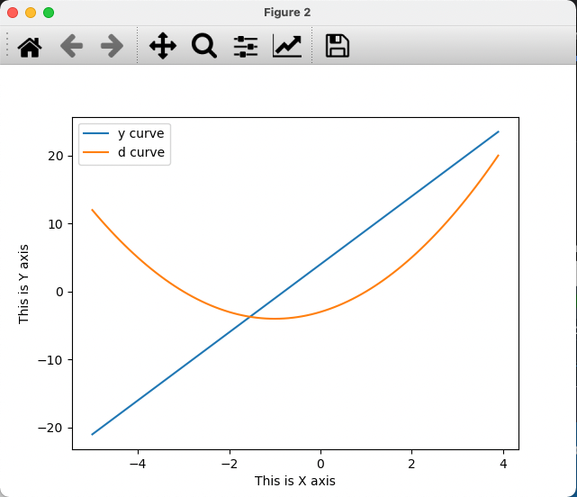
grid() function with a True bool: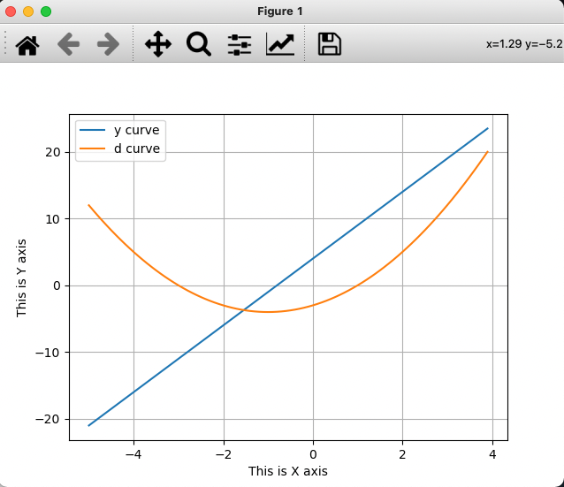
Sample the sine function with np.linspace, once coarsely and once densely:
import numpy as np
import matplotlib.pyplot as plt
x10 = np.linspace(0, 2*np.pi, 10)
y_10pts = np.sin(x10)
x50 = np.linspace(0, 2*np.pi, 50)
y_50pts = np.sin(x50)
fig, ax = plt.subplots(1, 1)
line1, = ax.plot(x10, y_10pts, marker='.', markersize=8, ls='-')
ax.set_title('sine wave (10 pts)')
ax.set_xlabel('Phase (radians)')
ax.grid(True)
fig2, ax2 = plt.subplots(1, 1)
line2, = ax2.plot(x50, y_50pts, marker='.', markersize=8, ls='-')
ax2.set_title('sine wave (50 pts)')
ax2.set_xlabel('Phase (radians)')
ax2.grid(True)Related functions: np.sin(x), np.cos(x), np.tan(x)
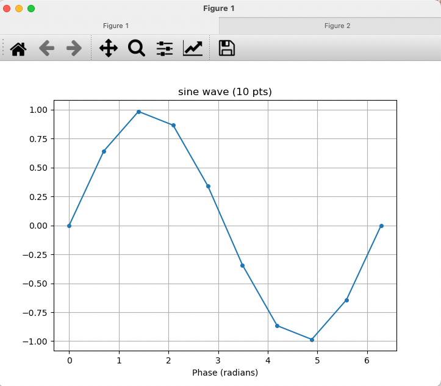
10 points: the sine wave looks angular - the sampling is too coarse.
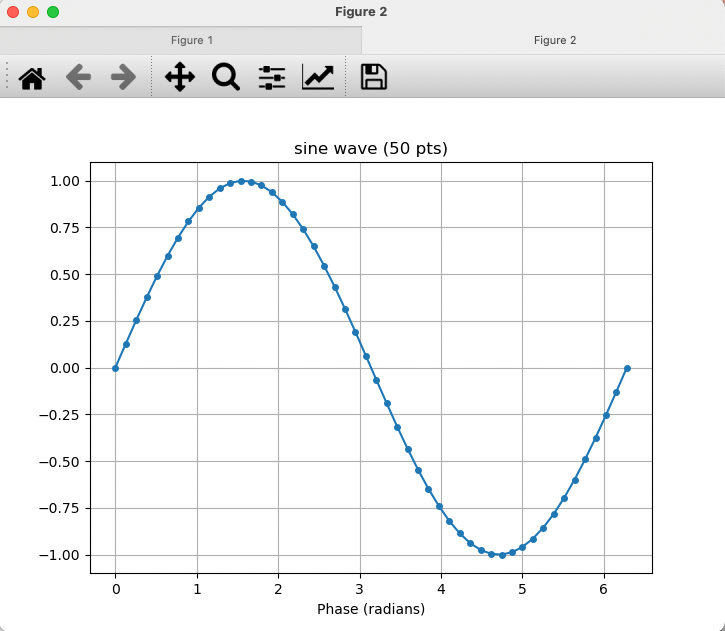
50 points: the same curve now looks smooth and continuous.
Any of the axes can be adjusted to logarithmic scale:
| Function | X axis | Y axis |
|---|---|---|
plot() |
linear | linear |
loglog() |
log | log |
semilogx() |
log | linear |
semilogy() |
linear | log |
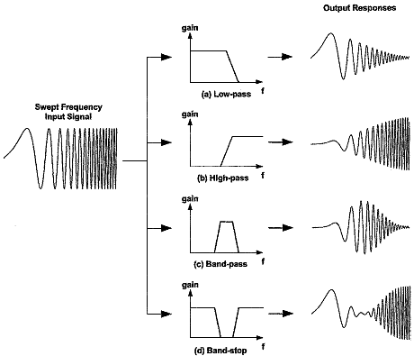
plot: Linear X and Y Scalesimport numpy as np
import matplotlib.pyplot as plt
w = np.linspace(10, 100000, 1000000)
s1 = 1e12*w/(np.sqrt((1e8-w**2)**4 + (1e8*w)**2))
s2 = 1e12*w/(np.sqrt((1e6-w**2)**4 + (1e6*w)**2))
fig, ax = plt.subplots(1, 1)
ax.plot(w, s1)
ax.plot(w, s2)
ax.legend(['filter1', 'filter2'])
ax.set_title('Frequency Response (plot)')
ax.set_xlabel('frequency (linear scale)')
ax.set_ylabel('output (linear scale)')
ax.grid(True)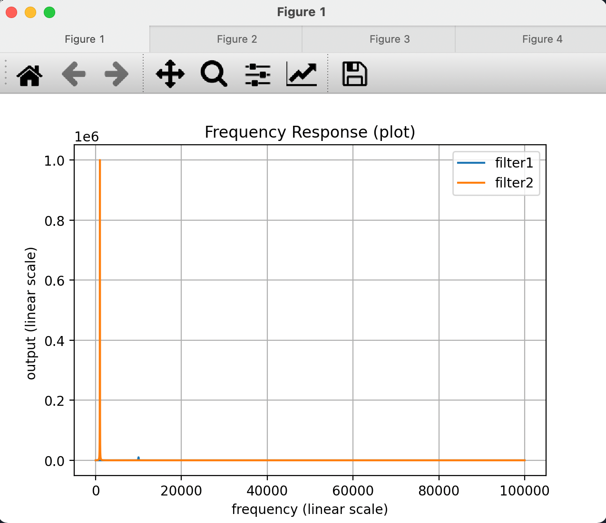
Signals’ evolution in x and y scales is not clear.
semilogx: Logarithmic X, Linear Yfig, ax = plt.subplots(1, 1)
ax.semilogx(w, s1)
ax.semilogx(w, s2)
ax.legend(['filter1', 'filter2'])
ax.set_title('Frequency Response (semilogx)')
ax.set_xlabel('frequency (log scale)')
ax.set_ylabel('output (linear scale)')
ax.grid(True)Better in terms of x-axis position of the signals.
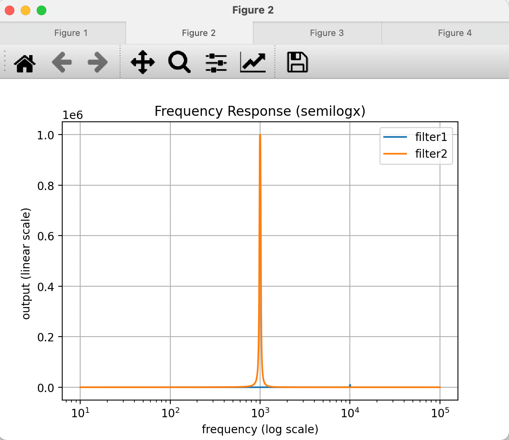
semilogy: Linear X, Logarithmic Yloglog: Both Axes in Log Scalefig, ax = plt.subplots(1, 1)
ax.loglog(w, s1)
ax.loglog(w, s2)
ax.legend(['filter1', 'filter2'])
ax.set_title('Frequency Response (loglog)')
ax.set_xlabel('frequency (log scale)')
ax.set_ylabel('output (log scale)')
ax.grid(True)A better view, as both x and y axis data have large ranges.
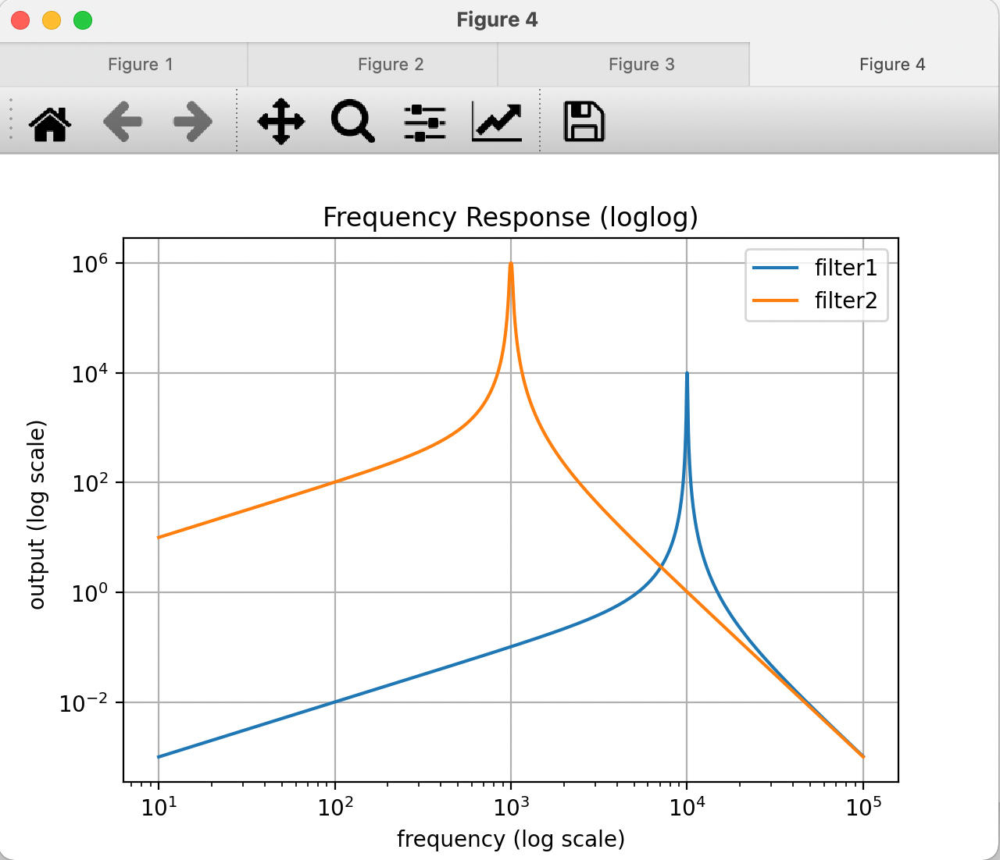
With fig, ax = plt.subplots(2, 2), the axes are indexed as ax[0,0], ax[0,1], ax[1,0], ax[1,1]:
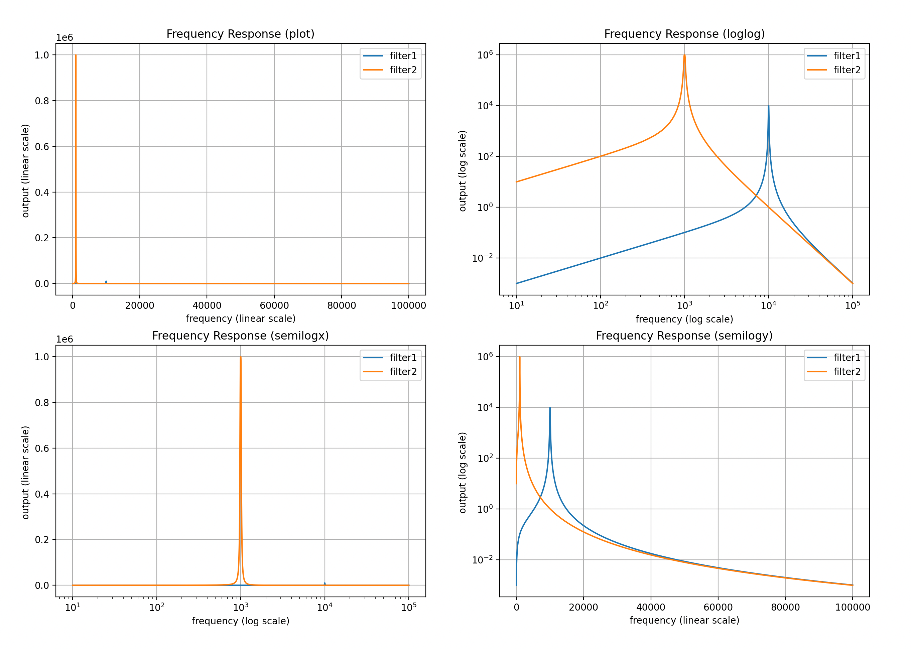
All four filter-response views in one figure:
fig, ax = plt.subplots(2, 2)
ax[0,0].plot(w, s1)
ax[0,0].plot(w, s2)
ax[0,0].legend(['filter1', 'filter2'])
ax[0,0].set_title('Frequency Response (plot)')
ax[0,0].set_xlabel('frequency (linear scale)')
ax[0,0].set_ylabel('output (linear scale)')
ax[0,0].grid(True)
ax[0,1].loglog(w, s1)
ax[0,1].loglog(w, s2)
ax[0,1].legend(['filter1', 'filter2'])
ax[0,1].set_title('Frequency Response (loglog)')
ax[0,1].set_xlabel('frequency (log scale)')
ax[0,1].set_ylabel('output (log scale)')
ax[0,1].grid(True)
ax[1,0].semilogx(w, s1)
ax[1,0].semilogx(w, s2)
ax[1,0].legend(['filter1', 'filter2'])
ax[1,0].set_title('Frequency Response (semilogx)')
ax[1,0].set_xlabel('frequency (log scale)')
ax[1,0].set_ylabel('output (linear scale)')
ax[1,0].grid(True)
ax[1,1].semilogy(w, s1)
ax[1,1].semilogy(w, s2)
ax[1,1].legend(['filter1', 'filter2'])
ax[1,1].set_title('Frequency Response (semilogy)')
ax[1,1].set_xlabel('frequency (linear scale)')
ax[1,1].set_ylabel('output (log scale)')
ax[1,1].grid(True)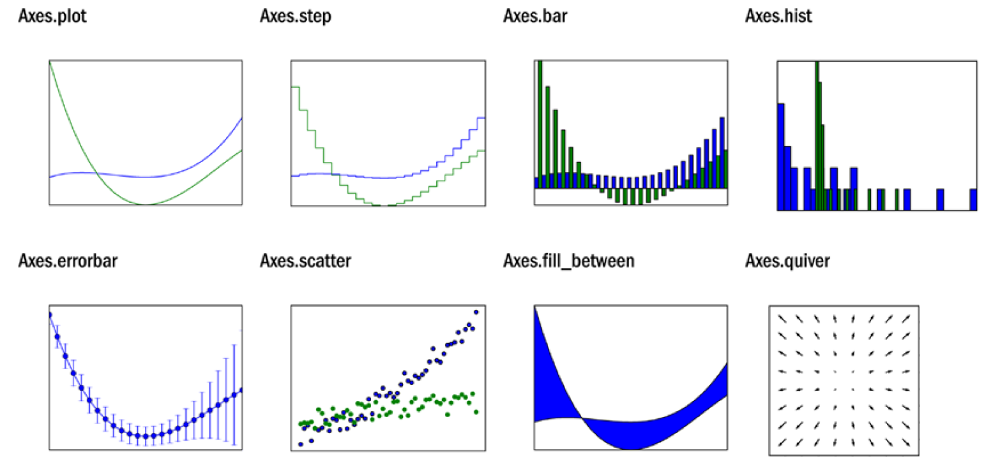
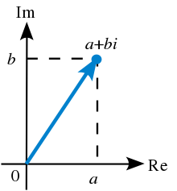
import numpy as np
import matplotlib.pyplot as plt
r = np.arange(0, 2, 0.01)
theta = 2 * np.pi * r
fig, ax = plt.subplots(subplot_kw={'projection': 'polar'})
ax.plot(theta, r)
ax.set_rmax(2)
ax.set_rticks([0.5, 1, 1.5, 2]) # fewer radial ticks
ax.set_rlabel_position(-22.5) # move radial labels
ax.grid(True)
ax.set_title("A line plot on a polar axis", va='bottom')
plt.show()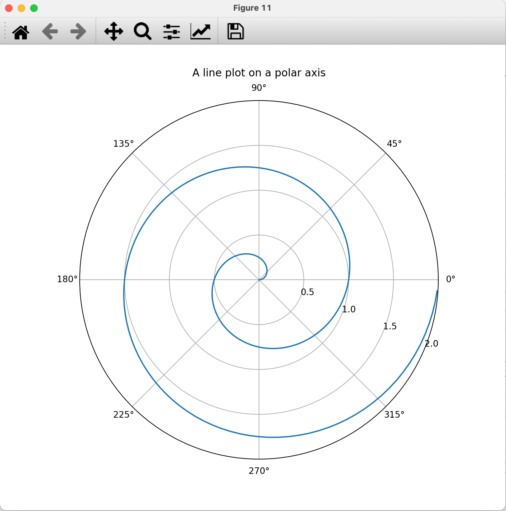
fig, ax = plt.subplots() then ax.plot(x, y).plot().semilogx, semilogy, and loglog reveal behavior that linear scales hide.plt.subplots(rows, cols) places several axes in one figure.